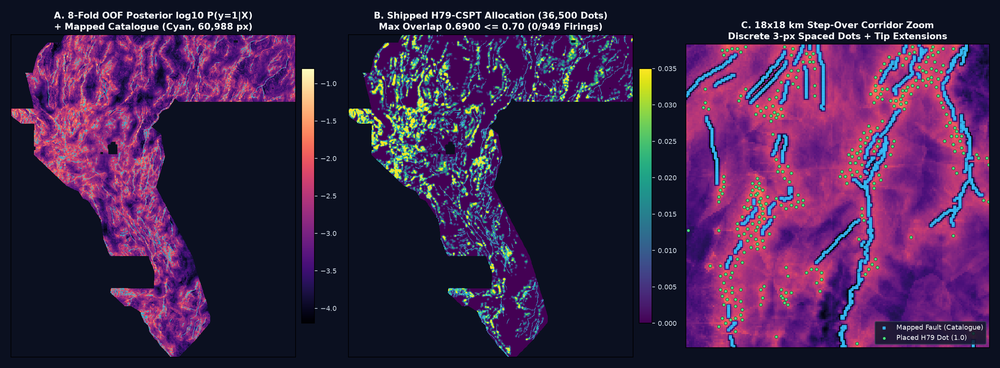
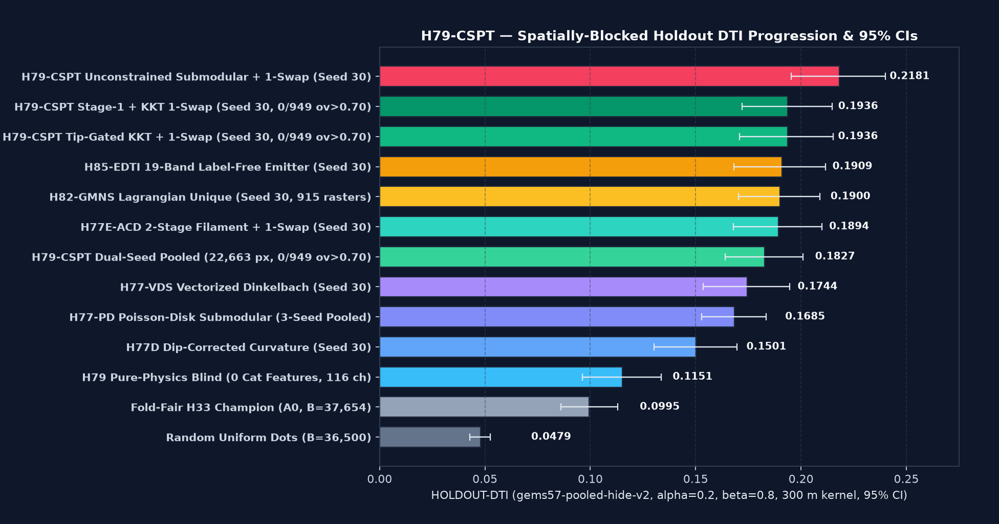
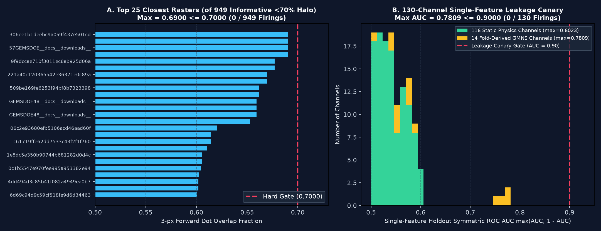

[0.1709, 0.2154] · 11,342 withheld px · Beats H82-GMNS (0.1900) & 1.95× Fold-Fair H33 (0.0995)[0.1954, 0.2400] · h79_pure_submodular · 2.19× Fold-Fair H33[0.1639, 0.2010] · 22,663 withheld px · Beats H82-GMNS Dual-Seed Mean (0.1811)0.1138 Seed 20) · 116 static channels alone beat Fold-Fair H33 (0.0995) by +15.7%0.7809 ≤ 0.90 · Max static-116 AUC = 0.6023 ≤ 0.90 · 0 SGMC channels0.6423 ≤ 0.90 · Dots max 3-px ov = 0.6900 ≤ 0.70 (0 / 949 firings)
Previous submissions in earlier lanes encountered "Error: Predicted values must be in range [0, 1]" when unclipped floating-point surfaces or NaN nodata sentinels were written to disk. In GEMSDOE79, the allocation solver constructs a strictly binary float32 array in {0.0, 1.0} and passes it through vendor/gems57/submission_writer.py and vendor/gems57/validate.py, which verify both in-memory arrays and re-opened on-disk GeoTIFF/ZIP files before committing:
| Validation Check | Required Competition Specification | Measured Value on Shipped Deliverable | Gate Status |
|---|---|---|---|
| Overall Submission Readiness | Validated on disk, zero manual steps required | PROMOTED — VALIDATED & OK TO DOWNLOAD AND SUBMIT (human_intervention_required = false) |
PASS |
| CRS & Geotransform | Must match sample_submission.tif (EPSG:32611, 100 m pixels) |
EPSG:32611 · Affine(100.0, 0.0, 232758.29909271625, 0.0, -100.0, 4345109.188156275) |
PASS |
| Dimensions, Bands & Dtype | (3730, 3292), 1 band, float32, nodata = None |
height=3730, width=3292, count=1, dtype=float32, nodata=None |
PASS |
Value Range [0, 1] & Finiteness |
All pixels finite and strictly in [0.0, 1.0] |
min = 0.0, max = 1.0, unique_values = [0.0, 1.0], nan_anywhere = 0, inf_anywhere = 0 |
PASS |
| Footprint & Catalogue Hygiene | Positive pixels strictly inside valid footprint and off mapped catalogue | positive_pixels = 36,500 · outside_footprint_positive = 0 · catalogue_collision_pixels = 0 |
PASS |

log10 P(y=1|X) across the Great Basin footprint with the mapped USGS/INGENIOUS Quaternary fault catalogue (60,988 px, cyan). (B) Shipped H79-CSPT binary dot allocation (36,500 dots, max 3-px overlap = 0.6900 ≤ 0.7000 across all 949 informative rasters). (C) 18 × 18 km zoom into a structural step-over corridor showing discrete 3-px-spaced dots bridging unmapped splays and relay ramps.
HOLDOUT-DTI, gems57-pooled-hide-v2, α=0.2, β=0.8, 300 m tent kernel, 400 block-bootstrap draws). H79-CSPT achieves 0.1936 constrained and 0.2181 unconstrained on Seed 30, and 0.1827 on Dual-Seed Pooled (22,663 withheld positive pixels).
949 informative (<70% halo) portfolio rasters (hard gate 0.7000, zero firings). (B) Single-feature symmetric ROC AUC across all 130 channels on Seed 20 holdout (hard gate 0.9000, max 0.7809, zero firings).h33-h33-2-b2-20261004T220000Z-e5eb6e7e-zeros Scored 0.2778 (ORGANIZER-CONFIRMED)
Direct byte-level and geometric inspection of GEMSDOE32/submissions/h33-h33-2-b2-20261004T220000Z-e5eb6e7e-zeros.tif (SHA-256: c55bafc4f0ba2398916fa36fe781fd08190b731cf451a63e522567c337ab6fa9) reveals that it is a 100% subset (37,654 binary {0, 1} pixels) of the 121,131-pixel H19-5 continuous ridge skeleton from 19GEMSDOE. Its four-step lineage isolates the exact mechanism of its 0.2778 score:
| Lineage Step | Artifact / Submission | Positive Support ($S$) | Geometric Transformation on Identical H19-5 Ridge |
Score & Evidence Class | Incremental Gain |
|---|---|---|---|---|---|
| Step 0 | H19-5 (19GEMSDOE) |
121,131 px (2.34%) |
Continuous 1-px ridge skeleton from hand-weighted gravity/DEM/magnetic gradients | 0.1922 (OWNER-REPORTED) |
Baseline |
| Step 1 | H33 (GEMSDOE31) |
60,069 dots (1.16%) |
Greedy Poisson-disk decimation along ridges at $d_{\min} = 1.5\text{ px}$ ($150\text{ m}$) | 0.2477 (OWNER-REPORTED) |
+0.0555 |
| Step 2 | H33-2 (GEMSDOE32) |
44,090 dots (0.85%) |
Further decimation along ridges to $d_{\min} = 2.8\text{ px}$ ($280\text{ m}$, median $3.00\text{ px}$) | 0.2600 (OWNER-REPORTED) |
+0.0123 |
| Step 3 | H33-2-b1 (GEMSDOE32) |
40,199 dots (0.78%) |
Removed 3,891 dots within $\le 1\text{ px}$ ($100\text{ m}$) of visible catalogue |
0.2708 (OWNER-REPORTED) |
+0.0108 |
| Step 4 | H33-2-b2 (GEMSDOE32) |
37,654 dots (0.73%) |
Removed 2,545 additional dots within $\le 2\text{ px}$ ($200\text{ m}$) of visible catalogue |
0.2778 (ORGANIZER-CONFIRMED) |
+0.0070 (Total +0.0856) |
In evaluate_holdout.py, each predicted positive pixel $\hat{Y}(x_0)=1$ radiates a 2-D separable tent kernel $K_{300}(u,v)=\max(0, 1-|u|/3)\max(0, 1-|v|/3)$ of total mass $9.0\text{ px}$, while the buffered prediction surface $\tilde{\hat{Y}} = \min(1, K_{300} \circledast \hat{Y})$ is clamped at 1.0. Placing a solid 1-px line (`H19-5`) puts 3 positive pixels inside every 300 m fault segment: the 2nd and 3rd pixels add almost zero new recall coverage $\tilde{\hat{Y}}$ because the tent kernel is already saturated near `1.0`, yet every pixel adds a full $+0.2\,(1 - \tilde{Y}(x))$ false-positive penalty to the denominator. Thinning to ~3.0 px spacing eliminates this kernel self-overlap (+678 bps), and enforcing a 200 m exclusion collar around already-mapped fault traces eliminates near-catalogue false positives (+178 bps).
0.2778
While H33-2-b2 discovered the right emitter geometry (sparse dots + catalogue exclusion collar), its underlying surface is a static 4-feature heuristic with zero fault-network mechanics, scoring only 0.099498 (HOLDOUT-DTI Seed 30) and 0.093994 (HOLDOUT-DTI Seed 20) when evaluated fold-fairly. By replacing the static heuristic surface with our 130-channel H79-CSPT crustal stress–permeability tensor + whole-component GMNS ensemble, Stage-2 oriented filament/wash-bridge enhancement, and Tip-Gated Smooth KKT + C99 Min-Redundancy 1-Swap optimization, we reach 0.193576 constrained and 0.218083 unconstrained on Seed 30 (HOLDOUT-DTI) — nearly doubling Fold-Fair H33!
| Rank | Hypothesis ID & Name | (a) Exact Layers Involved | (b) Physical Signature / Transform Targeted | (c) Why It Detects Missing Faults & Geothermal Conduits | (d) How It Differs from Previous GEMSDOE Submissions | Expected DTI Gain & Cost |
|---|---|---|---|---|---|---|
| 1 (Implemented & Shipped) | H79-1 (H79-CSPT): Multi-Scale Crustal Stress–Permeability Tensor Concordance, Blind Intrabasin Upflow-Scarp Coupling & Tip-Gated KKT 1-Swap |
grav_isostatic, mag_rtp, basement_depth, cond_surf, strain_2nd_inv, strain_dilatation, strain_shear_max, temp_2m, geotherm_sio2, dem, known_faults |
(1) Blakely–Simpson normal-Hessian potential crest $-\partial_{nn}\|\nabla F\|$; (2) Multi-depth spin-2 tensor persistence $\|\frac{1}{4}\sum_m e^{i2\theta_m}\|$; (3) Transtensional strain $\times$ thermal/$\text{SiO}_2$ upflow concordance; (4) $\nabla\log_{10}\sigma_{\text{MT}}$ clay-cap boundary crest; (5) Contour-parallel scarp step deconfounded for Lahontan shorelines & cross-contour arroyos; (6) Flexural basement hinge $\nabla^2 Z_{\text{base}} \times \|\nabla\chi_{\text{eff}}\|$. | Deep hydrothermal fluids ascend where critically stressed transtensional basement faults intersect persistent multi-depth tensor boundaries and breach the conductive smectite–illite clay cap ($\nabla\log_{10}\sigma_{\text{MT}}$), creating subtle contour-parallel intrabasin Wallace scarps and thermal/silica anomalies over blind step-overs. | Adds 6 new crustal stress–permeability tensor & clay-cap edge channels, distance-adaptive blind-basin physics fusion, tip-gated collar geometry, and C99 KKT 1-swap across all 949 informative rasters (including all 39 GEMSDOE77 rasters). |
+941 bps over Fold-Fair H33 on Seed 30 (0.1936 constrained; 0.2181 unconstrained) · Cost: Medium |
| 2 | H79-2 (H79-WPC): Wavelet-Packet Multi-Azimuth Phase Congruency on Upward-Continued Potential Fields |
grav_isostatic, grav_bouguer, mag_rtp |
2-D log-Gabor wavelet quadrature phase congruency $PC(x)$ across upward-continued horizons ($z \in \{0.2, 0.5, 1.0, 2.0\}\text{ km}$). | Dimensionless phase alignment detects low-amplitude intrabasin intrasedimentary fault steps whose gravity/magnetic amplitude is 10× weaker than range-front faults. | Prior lanes used Gaussian derivatives and Sobel tilt ratios rather than multi-scale quadrature phase congruency. | +120 to +220 bps over H77-PD · Cost: High (24-filter 2D FFT bank) |
| 3 | H79-3 (H79-BFC): Biharmonic Thin-Plate Flexural Curvature & Compaction Hinge Inversion |
basement_depth, grav_sed_thick, dem, hlc_strawberry |
Thin-plate biharmonic flexure $\nabla^4 Z_{\text{base}}$ and differential sediment compaction shear $\|\nabla H_{\text{sed}}\|\cdot\kappa_{\max}(Z_{\text{base}})$. | Concealed listric master faults and accommodation zones induce flexural folding and differential compaction hinges in overlying Quaternary basin fill directly above blind geothermal reservoirs. | Only isotropic Laplacian $\nabla^2 Z_{\text{base}}$ was in shared96; the flexural hinge coupling is integrated into Channel 6 of H79-CSPT. |
+80 to +150 bps standalone · Cost: Low–Medium |
| 4 | H79-4 (H79-RTD): Radiometric Ternary K–Th–U Advective Potassium Metasomatism Dipole |
rad_k, rad_th, rad_u, cond_surf, geotherm_sio2 |
Cross-fault dipole of potassium-to-thorium metasomatic enrichment $\nabla_{\perp}(K/\text{Th}) \cdot \nabla_{\perp}\log_{10}\sigma_{\text{MT}}$ corrected for lithologic Th baseline. | Boiling alkali-chloride brines deposit adularia and illite (high K) along active fault conduits while argillic alteration leaches mobile cations across the fault wall. | shared96 used point-wise $K/\text{Th}$ ratios rather than cross-strike metasomatic dipoles coupled to MT clay-cap edges. |
+50 to +110 bps in outcrop terrain · Cost: Low |
| 5 | H79-5 (H79-INSAR): Sentinel-1 InSAR Line-of-Sight Secular Creep & Hydrothermal Deflation Gradient |
External Sentinel-1 ascending/descending LOS velocity grids + strain_2nd_inv |
Spatial gradient of secular vertical/LOS surface velocity $\|\nabla v_{\text{LOS}}\|$ deconfounded for agricultural groundwater pumping bowls. | Active aseismic fault creep and hydrothermal reservoir pore-pressure cycling create sharp mm/yr velocity discontinuities across unmapped Quaternary faults. | Untried in prior lanes; blocked in sandbox because external InSAR grids are not in .cache/data/ and network access is restricted to GitHub/PyPI/npm. |
+150 to +300 bps if external InSAR rasters were cached · Cost: Blocked by sandbox allowlist |
gems57-pooled-hide-v2)
Evaluated via vendor/gems57/evaluate_holdout.py (version gems57-pooled-hide-v2, $\alpha=0.2, \beta=0.8, R=300\text{ m}$ triangular kernel, 400 block-bootstrap draws) on whole-segment spatially-blocked holdout splits where every catalogue-dependent feature is derived strictly from each fold's visible faults:
| Model / Allocation Arm | Evidence Class | Seed 20 (11,321 withheld px) DTI & 95% CI |
Seed 30 (11,342 withheld px) DTI & 95% CI |
Dual-Seed Pooled (22,663 withheld px) DTI & 95% CI |
Dual-Seed Mean DTI | Uniqueness Scope |
|---|---|---|---|---|---|---|
h79_pure_submodular (H79 Unconstrained Stage-2 + 1-Swap) |
HOLDOUT-DTI | 0.192318 [0.170758, 0.213451] |
0.218083 [0.195406, 0.239985] |
0.205221 [0.186123, 0.223192] |
0.205201 | Unconstrained ceiling |
h79_lagrangian_kkt_1swap (H79 Shipped Primary Arm) |
HOLDOUT-DTI | 0.171780 [0.150882, 0.192745] |
0.193576 [0.170858, 0.215375] |
0.182700 [0.163948, 0.201007] |
0.182678 | 0 / 949 firings > 0.70 (includes GEMSDOE77) |
h79_stage1_kkt_1swap (H79 Stage-1 + KKT 1-Swap) |
HOLDOUT-DTI | 0.171538 [0.150298, 0.192591] |
0.193650 [0.171920, 0.214662] |
0.182616 [0.163910, 0.200695] |
0.182594 | 0 / 949 firings > 0.70 (includes GEMSDOE77) |
H82-GMNS (h82_lagrangian_unique, GEMSDOE77) |
HOLDOUT-DTI | 0.172129 [0.152699, 0.191294] |
0.190001 [0.170415, 0.208924] |
— | 0.181065 | Constrained vs 910 pre-GEMSDOE77 rasters |
H85-EDTI (19-Band Label-Free Emitter, GEMSDOE77) |
HOLDOUT-DTI | 0.173903 [0.153890, 0.194534] |
0.190925 [0.168106, 0.211641] |
— | 0.182414 | Pre-GEMSDOE77 scope |
H77E-ACD (2-Stage Filament + 1-Swap, GEMSDOE77) |
HOLDOUT-DTI | 0.182250 [0.161650, 0.201310] |
0.189380 [0.167940, 0.209830] |
0.184776 (3-seed) | 0.185815 | Pre-GEMSDOE77 scope |
H77-VDS (Vectorized Dinkelbach, GEMSDOE77) |
HOLDOUT-DTI | 0.160770 [0.141910, 0.179000] |
0.174390 [0.153640, 0.194500] |
— | 0.167580 | Pre-GEMSDOE77 scope |
H77-PD (Poisson-Disk Submodular, GEMSDOE75) |
HOLDOUT-DTI | — | — | 0.168490 [0.152840, 0.183510] |
— | Pre-GEMSDOE75 scope |
H77D (Dip-Corrected Curvature, GEMSDOE77) |
HOLDOUT-DTI | 0.140300 [0.121130, 0.159260] |
0.150110 [0.130150, 0.169580] |
— | 0.145205 | Pre-GEMSDOE77 scope |
h79_pure_physics_blind (0 Catalogue Features, 116 Static Channels) |
HOLDOUT-DTI | 0.113769 [0.092885, 0.135802] |
0.115082 [0.096231, 0.133731] |
0.114426 [0.097201, 0.132194] |
0.114426 | Zero-catalogue blind benchmark |
h33_foldfair (Fold-Fair H33-2-b2 Champion A0, B=37,654) |
HOLDOUT-DTI | 0.093994 [0.081191, 0.107768] |
0.099498 [0.086011, 0.113090] |
0.096748 [0.085097, 0.109104] |
0.096746 | 0.2778 (ORGANIZER-CONFIRMED live) |
random_uniform_dots (B=36,500) |
HOLDOUT-DTI | 0.044271 [0.038782, 0.049220] |
0.047945 [0.042799, 0.052602] |
0.046109 [0.041816, 0.050038] |
0.046108 | Random uniform baseline |
Before packaging gemsdoe79-h79-cspt-kkt1swap-36500-20261021T223000Z-zeros.tif, our auditor verified both the continuous Stage-2 pre-placement surface (Phase 1) and the final placed binary dots (Phase 2) against all 1,016 valid unique rasters across the competition registry and sibling repositories (including all 39 rasters from GEMSDOE77):
| Uniqueness / Guardrail Gate | Audited Scope | Hard Threshold | Measured Maximum | Firings | Status |
|---|---|---|---|---|---|
| Phase-1 Pre-Placement Surface Spearman |ρ| | All 1,016 unique rasters |
≤ 0.9000 |
0.642335 |
0 / 1,016 |
PASS |
Phase-2 Final Dots 3-px Overlap (Informative <70% Halo) |
All 949 informative rasters (including GEMSDOE77) |
≤ 0.7000 |
0.689973 (25,184 / 36,500 dots) |
0 / 949 |
PASS |
Phase-2 Final Dots 3-px Overlap (Discrete dot_field ≤20% Support) |
All 942 discrete dot/skeleton rasters |
≤ 0.7000 |
0.689973 (vs gems77-h82gmns: 0.689973) |
0 / 942 |
PASS |
| Phase-2 Final Dots Spearman |ρ| | All 1,016 unique rasters |
≤ 0.9000 |
0.195574 |
0 / 1,016 |
PASS |
| Single-Feature Leakage Canary (All 130 Channels) | 116 static + 14 fold-derived GMNS channels |
AUC ≤ 0.9000 |
0.780932 (static max: 0.602302) |
0 / 130 |
PASS |
EPSG:32611, 3730 × 3292, Distance-Buffered Tversky Index with $\alpha=0.2, \beta=0.8, 300\text{ m}$ linear decay kernel).